A glimpse inside
A collection of photographs of Saint George Church and the region's Orthodox heritage.
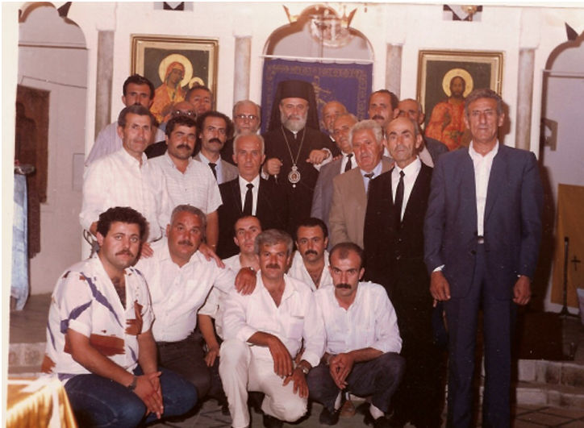
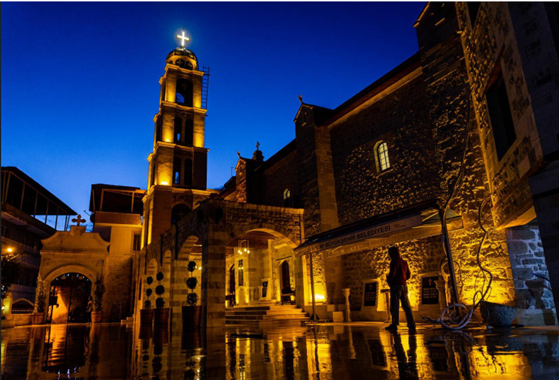
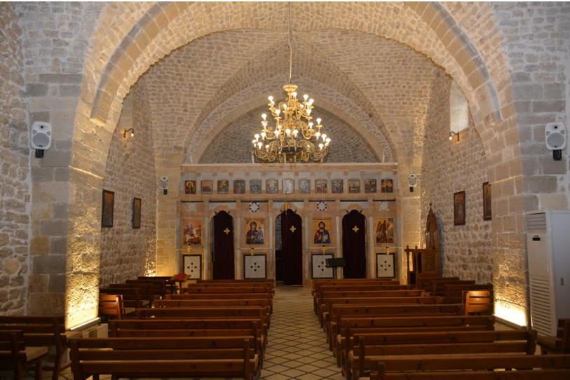
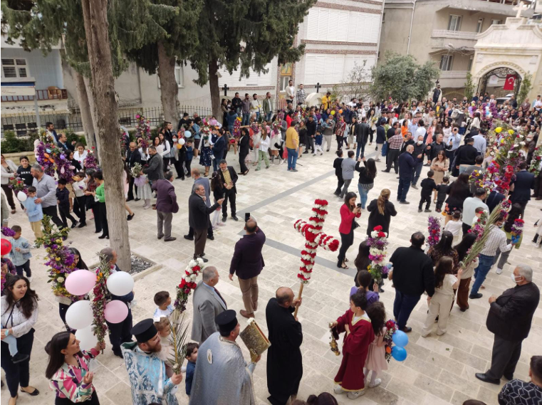
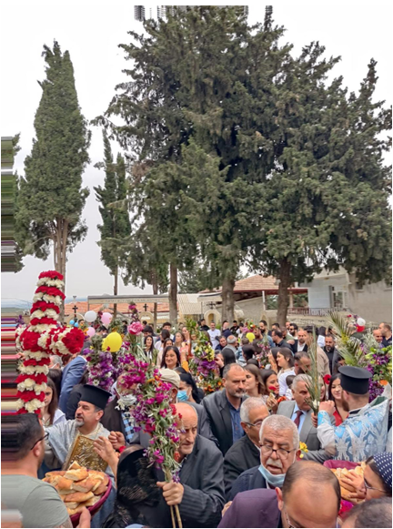
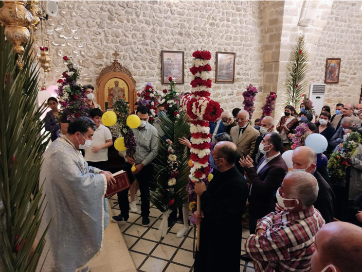
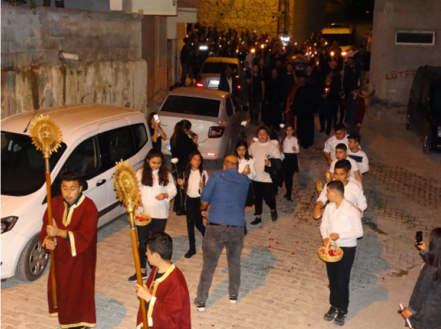
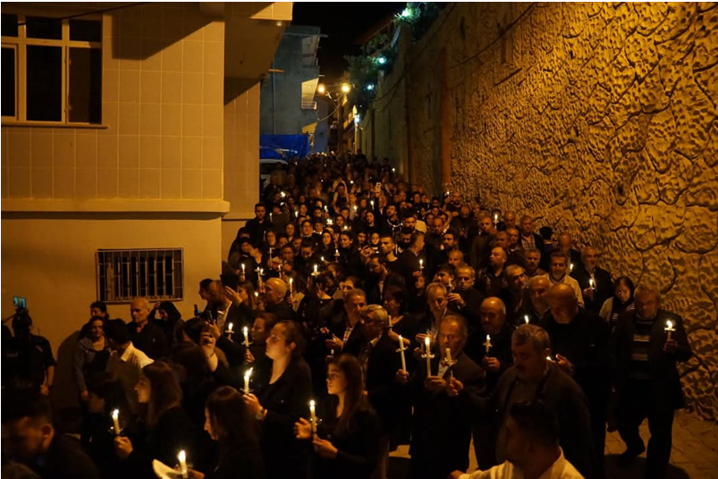
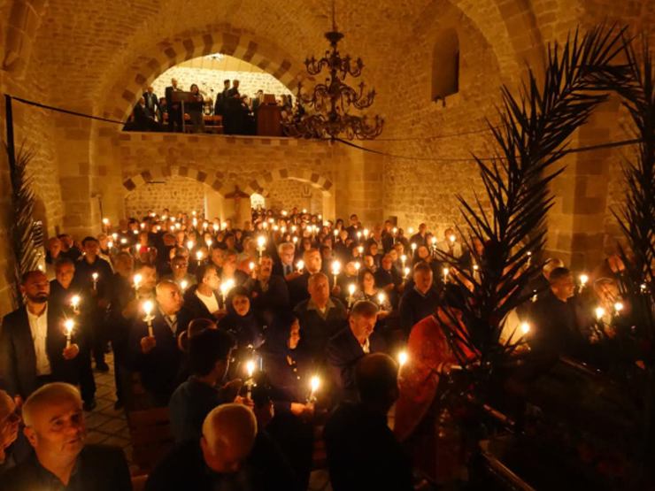
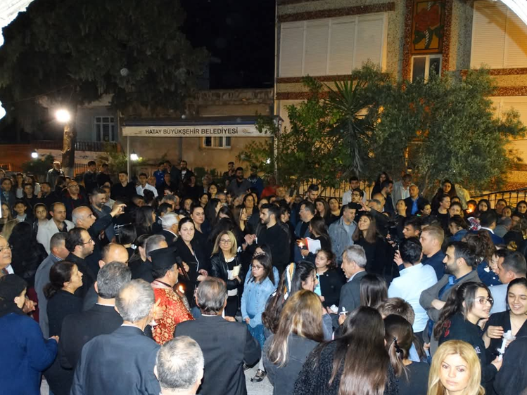
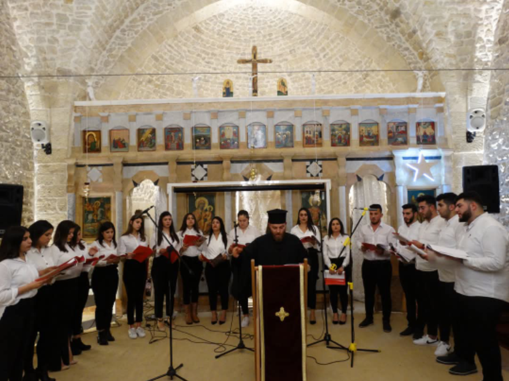
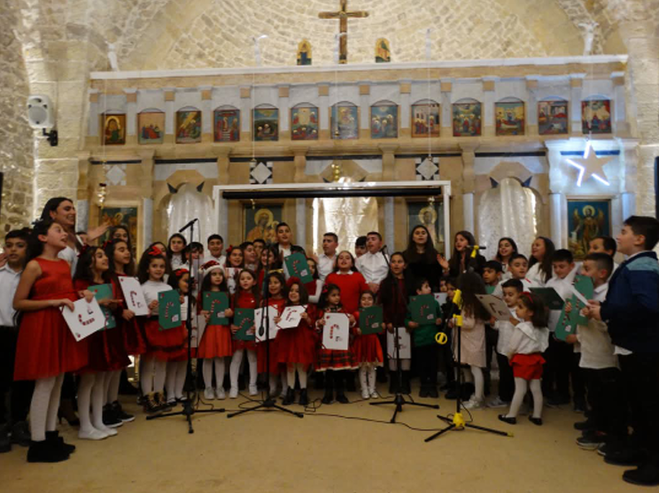
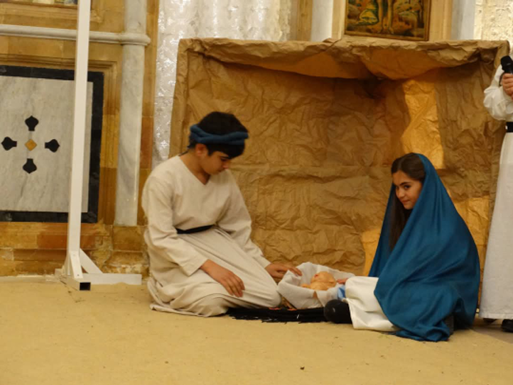
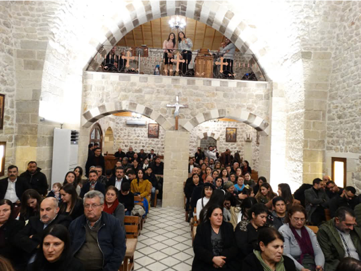
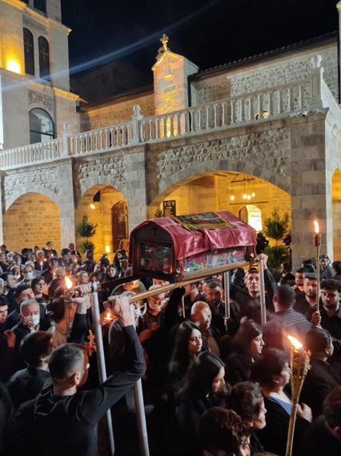
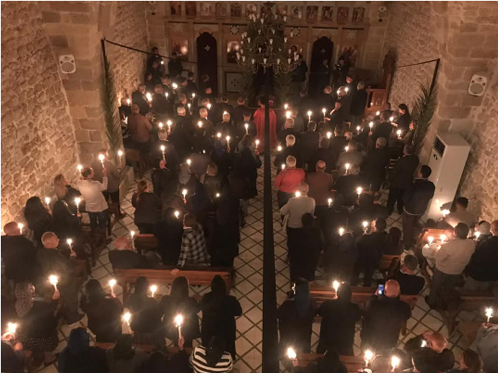
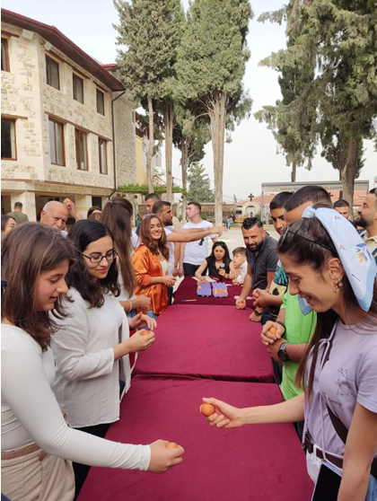
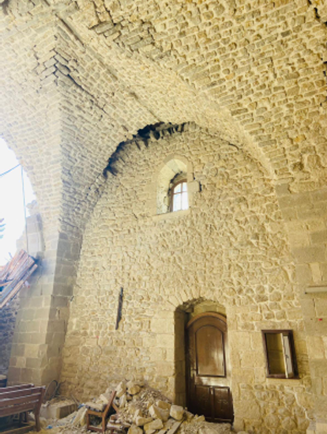
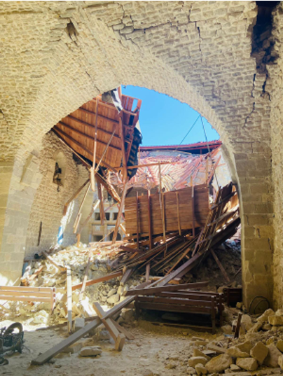
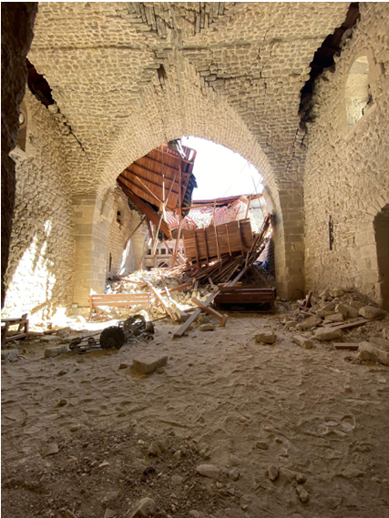
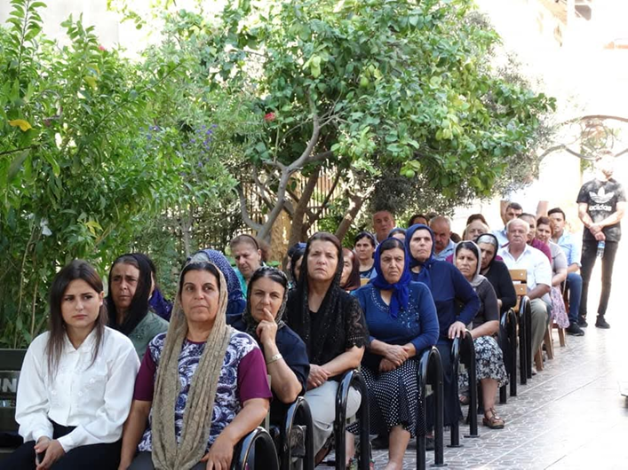
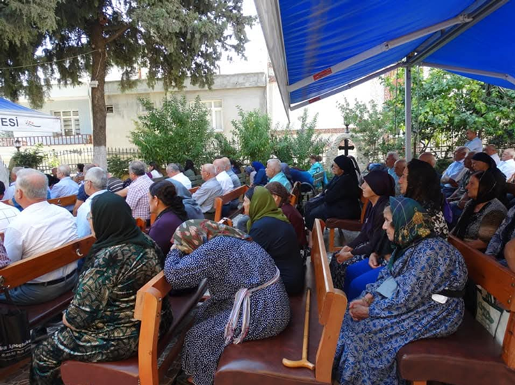
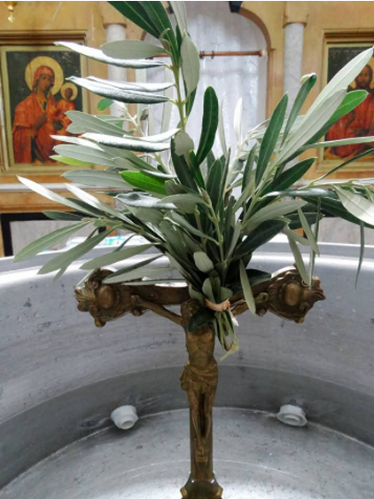
Photographs from the restoration project album of Saint George Greek Orthodox Church. Click a photo to view it larger.